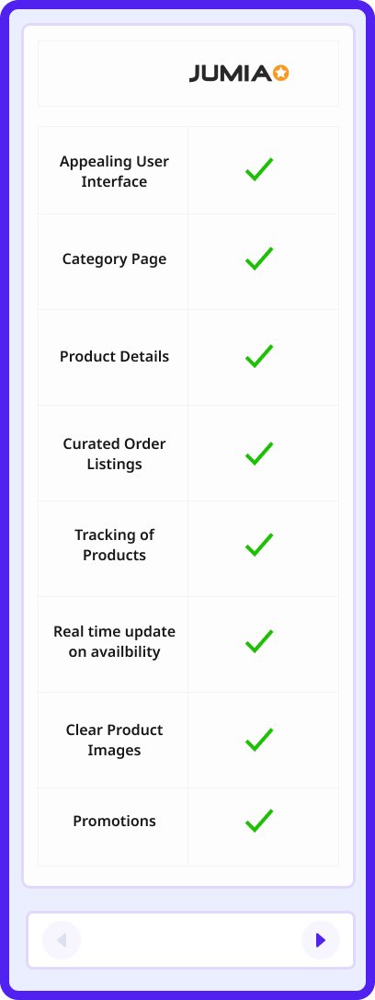
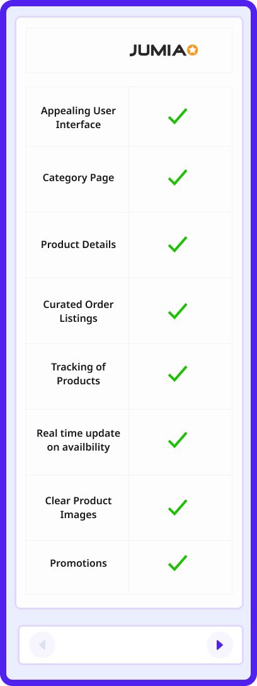

FIDELITY BANK APP REDESIGN
Financial service to send/receive money, pay for products
My Role
Lead Product Designer
Industry
E-Commerce

Introduction
Fidelity Bank is a Nigeria Commercial Banking institution, licenses by the Central Bank of Nigeria as a commercial banking with international authorization. In 2017, Fidelity bank was ranked 7th most capitalized bank in Nigeria, 25th most capitalized bank on Africa continent. In 2017, Fidelity Bank has grown to have over 4million plus users, including 240 business offices, 775 ATMSs and 4,346 POS

DISCLAIMER
Fidelity Bank has an internal design team responsible for their designs. This case study wasn't solicited to me, neither was the aim towards dis-crediting or criticizing the works of the design team.
Understanding the problem
Making transactions easier and faster, without any difficulties is the goal of every user. On a average day, at least 80% of people carries out transactions, and more than 65% uses the mobile banking application. Fidelity Mobile Banking Application lacks the overall experience, that satisfies the goals of its users. The mobile app UX and UI has a lot of issues ranging from excessive whitespace, unappealing interfaces, busy icons of the hamburger menu, difficulties in locating the transaction history, and so much more. After carefully studying the issues, a redesign was needed to solve the problem.
Design Process


Product Research & Discovery
After understanding what the problem is about with the banking app, I moved into the research stage. To properly have a deeper understanding about the challenges and frustration faced by the users of the application, both method of user research method were implemented. At first, i sent out google survey forms to gather responses, after which i proceeded to conduct live interviews with the users. My focus during the research stage was to understand users overall experience with the bank app, what motivates them to use the app, and how they use it.
AIM
Redesign of Fidelity Bank Mobile Application, with the addition of new features
Competitive Audit
Fidelity Bank is a financial banking institution in Nigeria, that has other competitors serving the same purpose with the aim of serving better experiences to their users. I looked into other banking apps, and evaluated the reviews by users to give an insight and clear understanding that can serve as an advantage for fidelity bank mobile app. From this competitive analysis, I was able to understand other financial brands' weaknesses and strengths which will help me as a guide to building better products for Fidelity bank.
 

Product Goals
Building products that solves varieties of user needs, most especially for a shopping experiences that shapes the buying and selling experiences of users through the implementation of core features, will continually encourage users to continue use such products - Goal of every products
To make shopping experiences simple and seamless for buyers to find and purchase the products they need while providing sellers with tools to manage and promote their products. Qiid is also committed to providing a secure environment for all transactions, to build competency, trust and seamless experiences for every users
-
 User Interface built with users
on mind
User Interface built with users
on mind
-
Improved methods of shopping. purchasing and listings of
Products
-
Improved customer and users satisfaction
-
Increased users conversations and retention rates
Product Goals

Pelumi Lawrence
Male
 Lagos,Nigeria
Lagos,Nigeria
Personal Details
Pelumi Lawrence is a content writer freelancer, who also spends part of his time in learning electrical works. Lawrence oftenly goes on breaks when all works has been concluded. He spends his time reading books and listening to news to keep him updated
Interests
Singing, Outdoor Activities
Challenges
-
Inability to communicate with an online support
-
Challenging and Confusing user interfaces
Wants
-
A chat feature with a customer rep, that way failed transaction get sorted immediately
-
Easy-to-use User interfaces
Akinde Timothy
Male
Lagos,Nigeria
Personal Details
Akinde Timothy is a personal development coach. He works on a full time role as a personal assistant to a propritess of a secondary school. Timothy believes all works demands critical thinking to prefer better solutions. He spends his leisure reading books and he enjoys doing that alot.
Interests
Finances, Outdoor Activities, Enjoy shopping and Politics
Challenges
-
Inability to communicate with an online support
-
Absence of beneficiaries for transfers and top up purchases
Wants
-
In App complain feature to log and track complains and issues
-
Access to curated beneficiaries and ease of locating transaction logs and history
Information Architecture
An end to end representation/workflow of the information architecture showing the walkthrough of one phase to other other

Sketches

Splash Screen
Problem
The initial screen has a bad visual hierarchy, and wasn't properly aligned. The image in the background takes the user's attention from being focused on the bank logo and slogan.
Solution
While redesigning this, I made it so minimal for users by adding the bank logo on a plain white background to keep it simple and direct. Since it was a splash screen, there is absolutely nothing a user will do at that moment, rather than to stay and keep eyes focused while waiting for the next screen to show. This is why simplicity was maintained for the splash screen.


Problems and Solutions Suggested
SIGN IN
Screen A is the sign up page for the application. The background image is not necessary because it has no purpose. For the sign up, users focus are always on inputting the right details so as to gain access to the next screen.


A look into the current experience and redesign
Challenges of each screen
Screen B the homepage/dashboard of the mobile application after a successful sign in. At first, the home page looks so empty and makes the user confused on what to do next. For new users, this makes them confused more and triggers a bad experience with the mobile app. Secondly, the homepage has a lot of whitespace.
Screen C is the hamburger section. The hamburger is located at the top left corner of the homepage. The hamburger section has a lot of busy icons which makes the user look so confused on what to do. In as much as, the icons were arranged in order of priorities, this doesn't make the app aesthetically pleasing to use.

Solution redesign
For the homepage, I ensured I kept the design minimal, so as to avoid distracting the users attention and to keep the user focused. I ensured the homepage has the necessary information and details, and keep it less from having alot of busy images or icons which are not necessary. I included the transaction history and a view all, so users can easily locate and also view all transactions. I also added some quick action buttons which include the beneficiaries. Since users want to be updated about every transaction, I included a status update so as to keep users informed about a transaction if it's successful, pending or not successful. Also, on the home page, I added the scan code for cashless transactions or payments. There was enough breathing space between the visual elements and limited whitespace to maintain visual hierarchy for the users.


I moved the busy icons on the hamburger menu of the former fidelity bank and made it a trueserve option for users. During the research, users often use these features, except for frequent reasons. I added a currency converter feature with the options ( reasons below). For the hamburger menu, accessibility was at the forefront of the design. I arranged the icons and descriptions vertically in list style instead of grid, which improves legibility for the user and also avoids the user eye movement from moving left to right.

Transfer Money
For users to be able to withdraw, a more secure and safer way of doing that has to be brought in, should incase of third party hack or scammers. To solve this, users have to enter the account information they would always withdraw their funds to, this way, the account information is saved to the system which will be used for subsequent withdrawals automatically.


Airtime Purchase


Currency Converter
The currency converter feature is an important feature of the mobile application. It allows users to have an understanding of the current conversion rate between two currencies without visiting different sites on the internet, and makes it convenient for them by doing this on the mobile app. I added a typing cursor to indicate a typing session and also to indicate the text that is being edited. It also allows users to switch from one currency to another.


Track Complain
The track complain feature allows users to make a new complain and gives them the ability to monitor/track their complains, with the aid of a progress bar. From research, users are always nervous to know how far their complaints have gone, either it has been received or worked on.


Beneficiary List
The beneficiary list comes in different sections in the app. Each sections has the number of beneficiaries on the list, and also allows users add a beneficiary.


Bank Locator
This feature allows users to easily locate and find the nearest fidelity bank branch near them. It allows for the search of the nearest landmark close to them which brings out the branch and atm within the specified landmark.


Learnings
As a designer, I believe redesign is very important and there is always a need for continuous improvement.
While working on this project, I encountered a few challenges that made me discover another hidden ability
that serves as a tool to bring solutions to problems. This project also made me understand more about
minimal designs and why it is important.
User experience is the skeleton of every design, and it is important for a brand to put this before its
users. I had this on my mind and made it a priority while working on this project. With this, I believe
this
will make fidelity bank stand out among other competitors